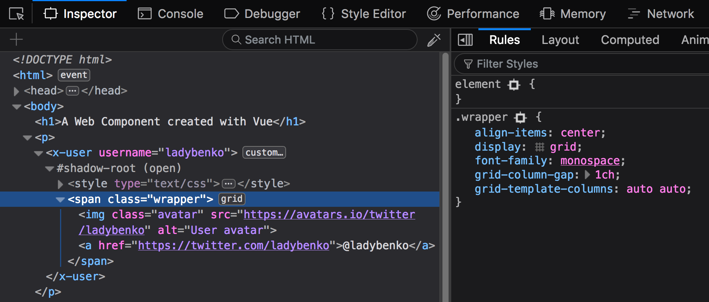
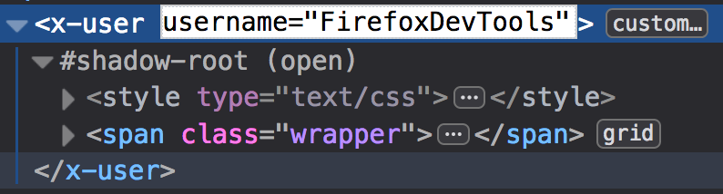

See how this looks like a regular Web Component in the Inspector:

However, it was created with Vue and building it as a Web Component target:
vue-cli-service build --target wc --name x-user XUser.vueIt looks like a regular Vue component!
<template>
<span class="wrapper">
<img :src="avatarUrl" alt="User avatar" class="avatar">
<a :href="userUrl">@{{username}}</a>
</span>
</template>
<script>
export default {
name: 'XUser',
props: ['username'],
computed: {
avatarUrl () { return `https://avatars.io/twitter/${this.username}`; },
userUrl () { return `https://twitter.com/${this.username}`; }
}
}
</script>
Since Vue's props work as attributes in a Custom Element, you can change them in the Inspector and see the component reacting to that:
